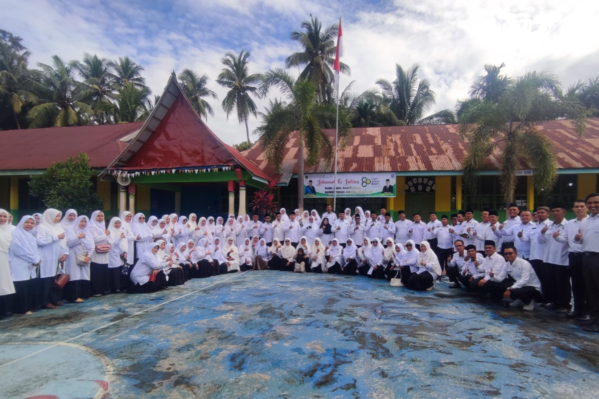
Profil Singkat
Kenali sejarah, visi misi, dan identitas MAN 2 Solok sebagai lembaga pendidikan yang berkomitmen pada kualitas.
Lihat ProfilWelcome to MAN 2 SOLOK
Project by Haikal Ashidiq
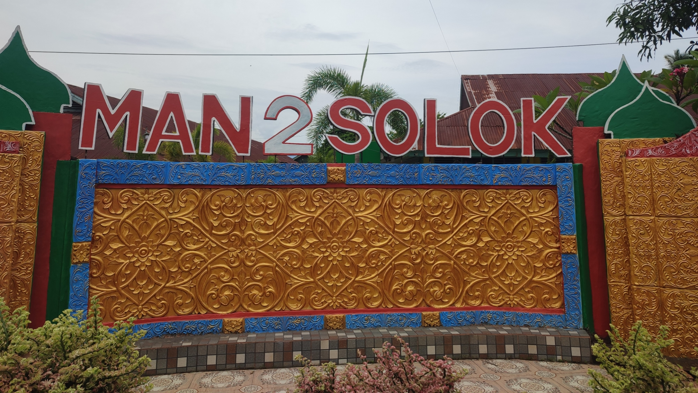
Menginspirasi dengan Akhlak, Berkarya untuk Dunia
Madrasah Aliyah Negeri 2 Solok adalah sekolah menengah atas berbasis nilai-nilai keislaman yang mengutamakan prestasi akademik, akhlak mulia, dan pengembangan potensi siswa.

Kenali sejarah, visi misi, dan identitas MAN 2 Solok sebagai lembaga pendidikan yang berkomitmen pada kualitas.
Lihat Profil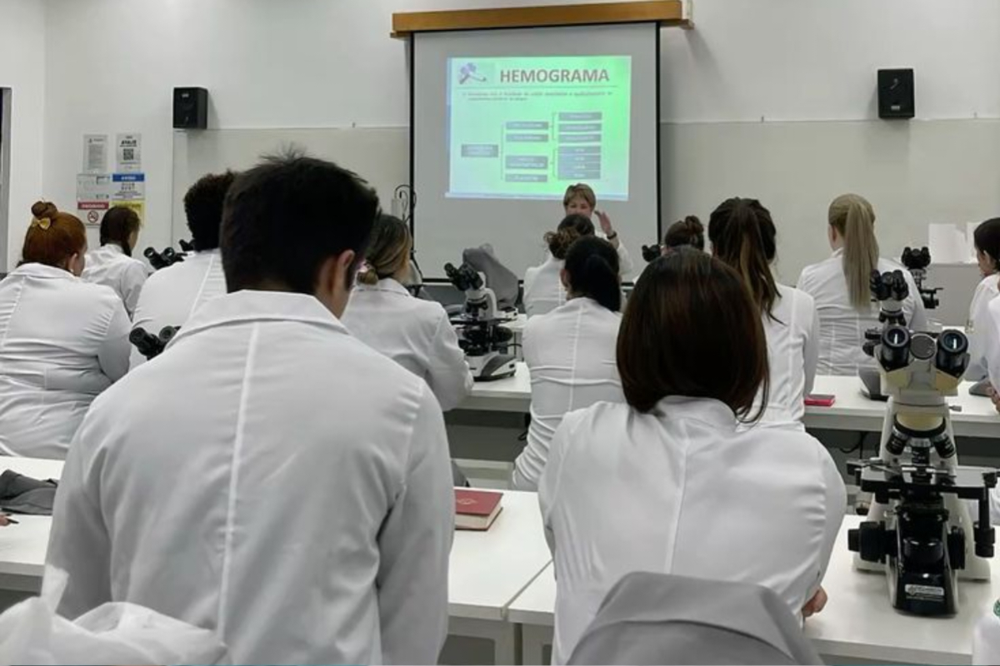
Temukan program jurusan yang dirancang untuk mengasah minat dan bakat siswa sesuai passion masing-masing.
Lihat Jurusan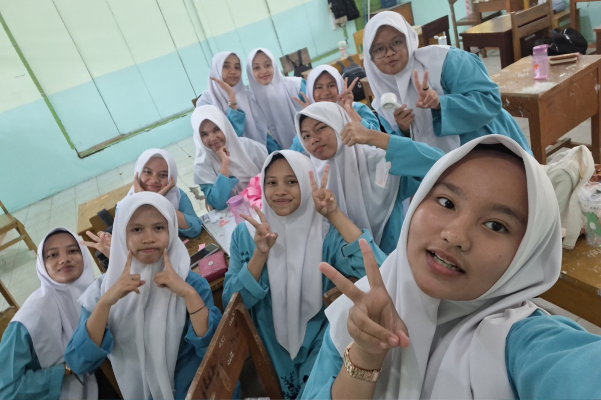
Momen dan kegiatan siswa MAN 2 Solok, mulai dari kegiatan akademik hingga non-akademik.
Lihat DokumentasiMAN 2 Solok merupakan madrasah aliyah negeri yang berkomitmen mencetak generasi berakhlak mulia dan berprestasi. Dengan tenaga pendidik berpengalaman dan fasilitas yang mendukung, kami mendampingi setiap siswa untuk berkembang secara akademik maupun karakter.
Selengkapnya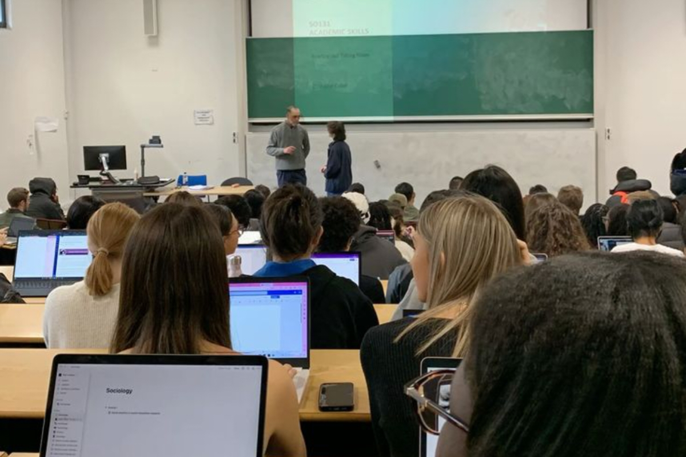
Membekali siswa dengan keterampilan teknis dan pemikiran logis untuk dunia industri dan teknologi.
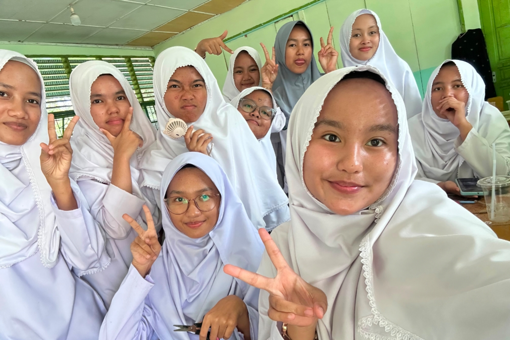
Mempersiapkan siswa yang tertarik pada bidang kesehatan dengan dasar ilmu yang kuat.
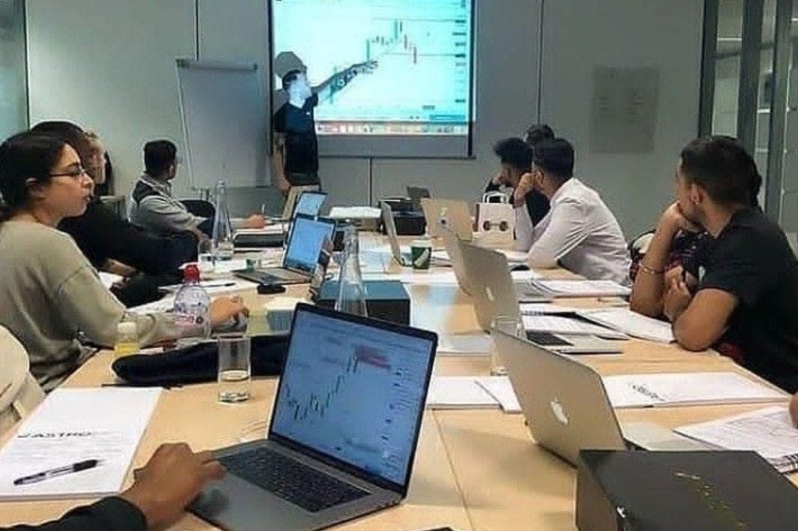
Mengasah ketelitian dan kemampuan analisis keuangan sejak bangku sekolah menengah.
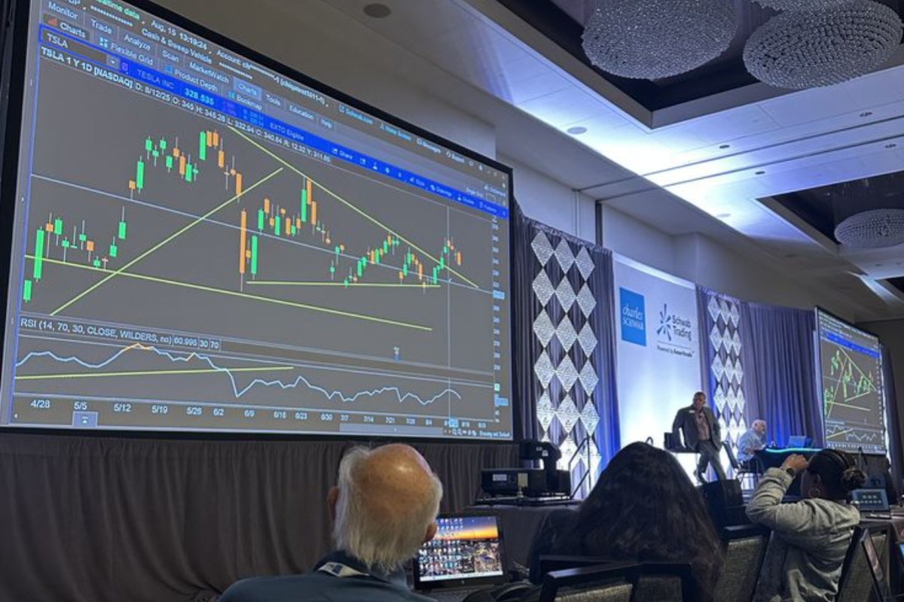
Membangun pemahaman dasar ekonomi dan bisnis sebagai bekal masa depan siswa.
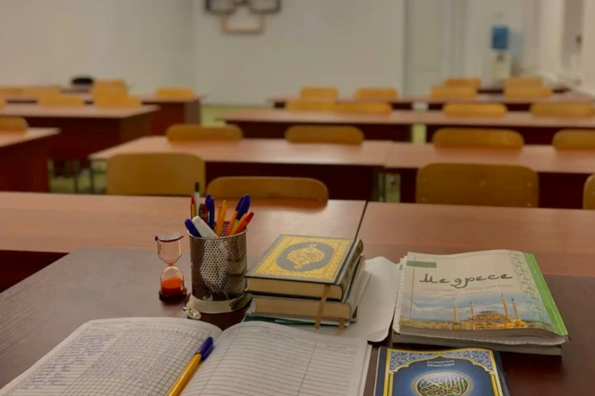
Memperdalam ilmu agama Islam sebagai fondasi akhlak dan wawasan keislaman siswa.
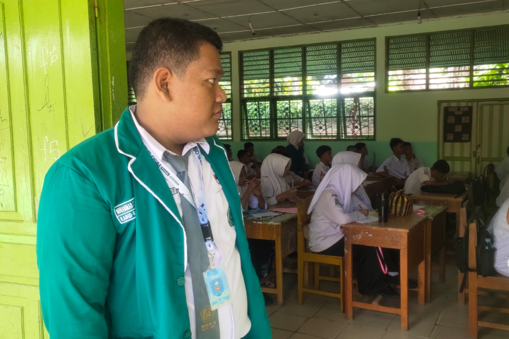
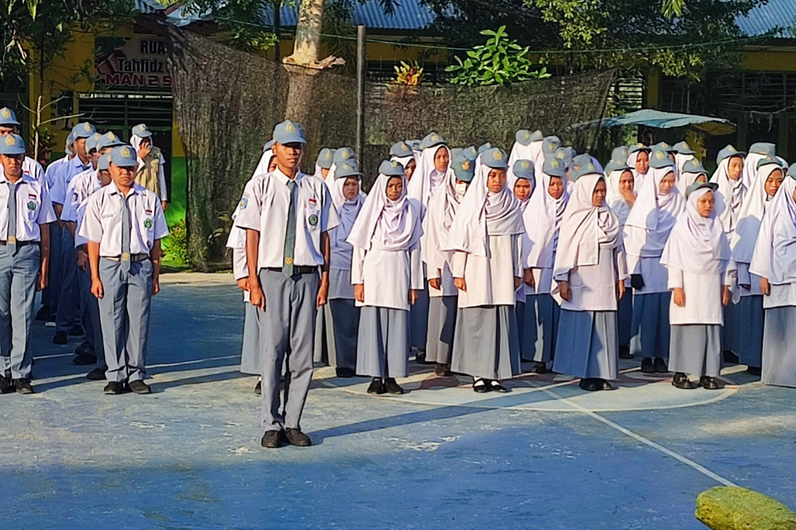
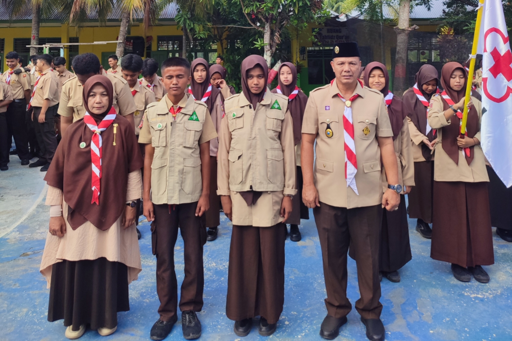
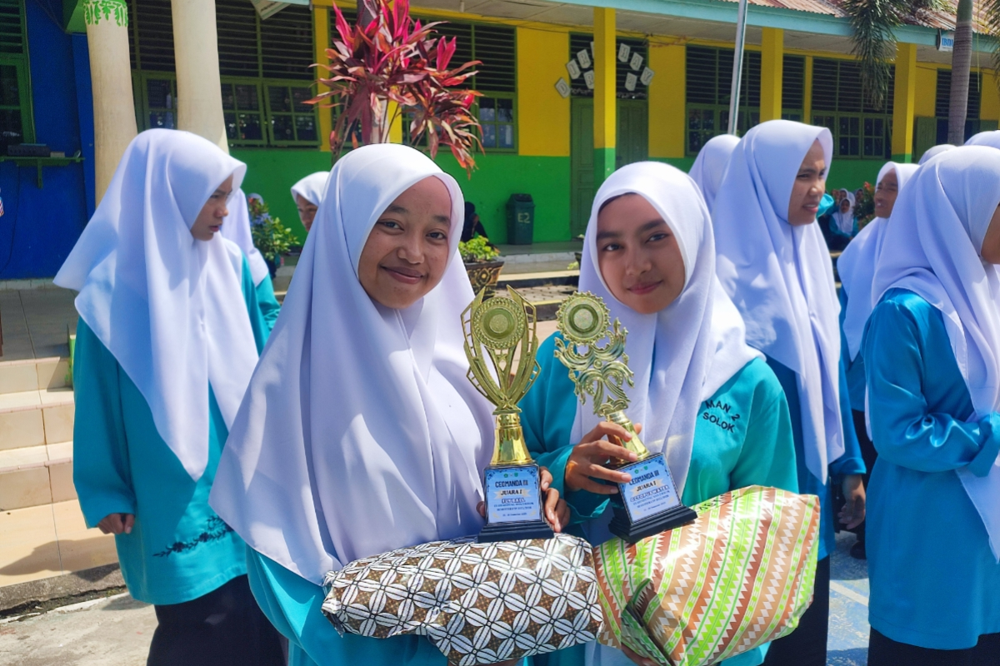
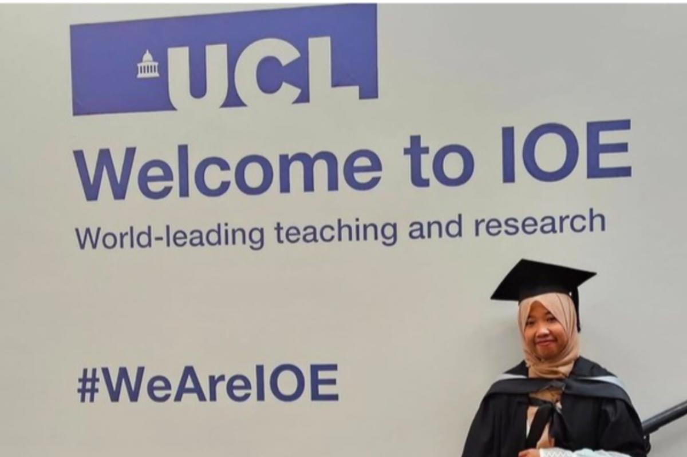
Tips sederhana untuk siswa dalam mengatur waktu belajar agar lebih fokus dan produktif setiap hari.
Perjalanan alumni yang membuktikan bahwa pendidikan di madrasah membuka banyak jalan menuju kesuksesan.
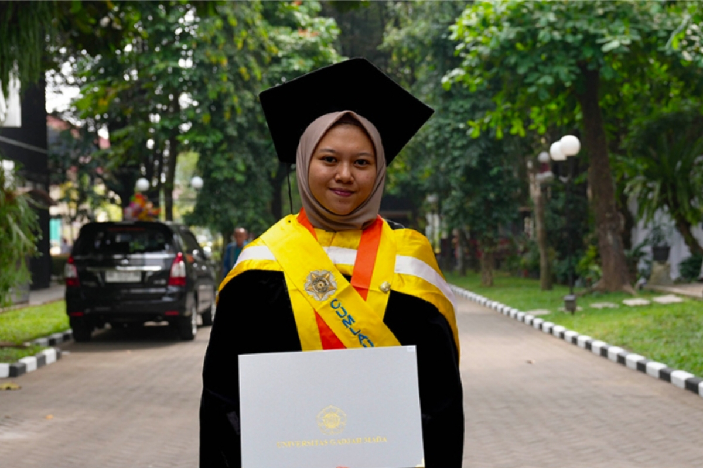
Mengapa penguatan karakter dan akhlak mulia menjadi bagian penting dari proses pendidikan di madrasah.
Jadilah bagian dari MAN 2 Solok dan kembangkan potensimu bersama kami.